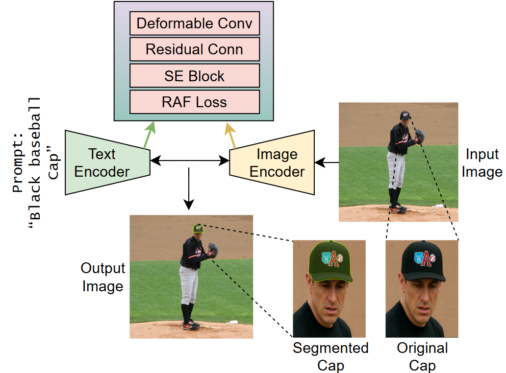
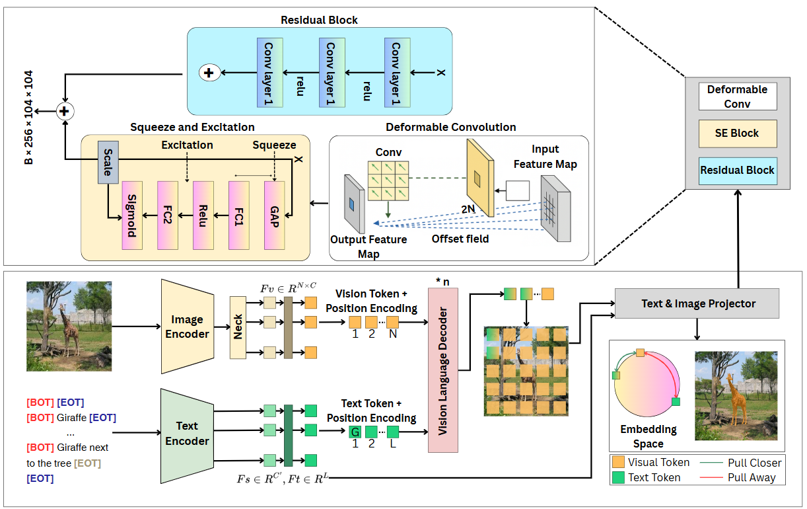
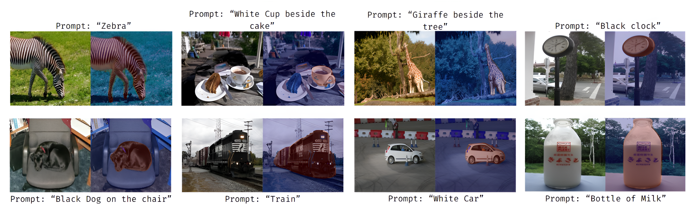
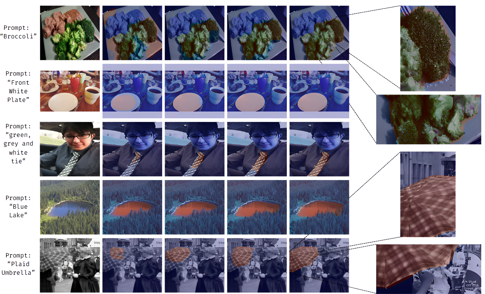
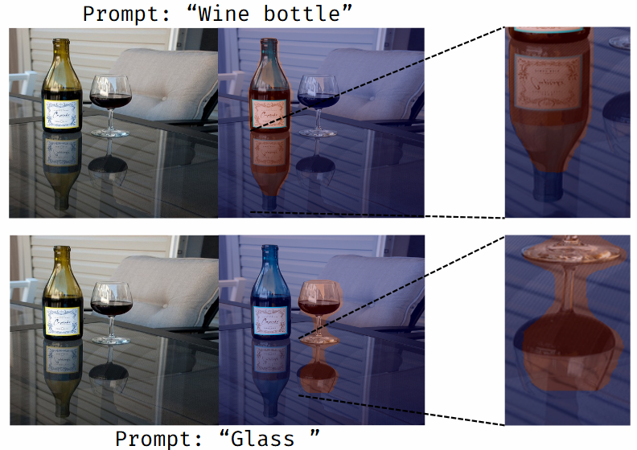

Given an image and a referring expression such as "Black baseball cap", SegVLM produces a precise mask of the described object, even when it occupies only a small region of the scene.
Image segmentation is a fundamental task in computer vision that involves partitioning an image into semantically meaningful regions. Referring image segmentation extends this task by using natural language expressions to localize specific objects, requiring the effective integration of visual and linguistic information.
We propose SegVLM, a vision-language model that incorporates architectural enhancements to improve both segmentation accuracy and cross-modal alignment. The model integrates a Squeeze-and-Excitation (SE) module for dynamic feature recalibration, deformable convolutions for geometric adaptability, and a residual connection for deep feature learning. We also introduce a novel Referring-Aware Fusion (RAF) loss, which balances region-level alignment, boundary precision, and class imbalance. Extensive experiments and ablation studies show that each component contributes to consistent performance improvements, and that SegVLM generalizes strongly across diverse datasets and referring expression scenarios.
SegVLM extends CRIS with a lightweight visual enhancement block placed in the visual projection pathway, so visual features carry context-aware, boundary-sensitive cues before they meet the text-derived kernels.

The image and text encoders produce visual and textual tokens that are fused by a vision-language decoder. Before projection, visual features pass through the enhancement block: a deformable convolution adapts to object geometry, an SE block reweights informative channels, and a residual connection preserves fine spatial detail.
Learn spatial offsets so the receptive field adapts to irregular object shapes and boundaries.
Recalibrates feature channels, emphasizing discriminative visual cues before fusion.
Adds enhanced features back to the input, preserving low-level detail and stabilizing training.
Combines Adaptive Dice, Focal, and BCE losses to handle class imbalance and sharpen boundaries.
We evaluate on PhraseCut, whose longer, compositional expressions make it a challenging benchmark, using mIoU and precision at several IoU thresholds. Higher thresholds only count near-perfect masks, so they reflect boundary quality.
| Model | mIoU (%) | Prec@50 | Prec@70 | Prec@90 |
|---|---|---|---|---|
| GROUNDHOG | 54.50 | – | – | – |
| MDETR (EfficientNet-B3) | 53.70 | 57.50 | 39.90 | 11.90 |
| MDETR (ResNet-101) | 53.10 | 56.10 | 38.90 | 11.90 |
| CLIPSeg (PC, D=128) | 48.20 | – | – | – |
| CRIS (baseline) | 43.57 | 45.10 | 25.10 | 4.10 |
| HULANet | 41.30 | 42.90 | 27.80 | 5.90 |
| Mask R-CNN (Top) | 39.40 | 40.90 | 25.80 | 4.80 |
| ViTSeg (PC) | 38.90 | – | – | – |
| Mask R-CNN (Self-trained) | 36.20 | 37.20 | 22.90 | 4.10 |
| RMI | 21.10 | 22.00 | 11.60 | 1.50 |
| MattNet | 20.20 | 19.70 | 13.50 | 3.00 |
| SegVLM (Ours) | 53.87 | 58.23 | 40.81 | 12.64 |
SegVLM improves on the CRIS baseline by +10.30 mIoU, surpasses both MDETR variants, and achieves the highest precision at every reported threshold.
| Variant | mIoU | Prec@50 | Prec@60 | Prec@70 | Prec@80 | Prec@90 |
|---|---|---|---|---|---|---|
| Baseline (CRIS) | 43.57 | 45.10 | 35.40 | 25.10 | 14.20 | 4.10 |
| + RAF Loss | 48.25 +4.68 | 50.70 | 39.80 | 29.60 | 17.10 | 6.50 |
| + Deformable + SE | 51.34 +3.09 | 54.30 | 42.70 | 33.20 | 20.20 | 8.20 |
| + Residual (SegVLM) | 53.87 +2.53 | 58.23 | 45.10 | 40.81 | 22.80 | 12.64 |
Each component adds a consistent gain on every metric, with the largest relative improvement at the strictest threshold: Prec@90 rises from 4.10 to 12.64.
SegVLM transfers well beyond PhraseCut, staying strong on RefCOCO+ (no location words) and RefCOCOg (longer expressions), while inference time stays stable at about 35 ms per image.
| Dataset | Split | mIoU | P@50 | P@70 | P@90 | Inference (ms) |
|---|---|---|---|---|---|---|
| RefCOCO | Val | 71.81 | 84.00 | 73.66 | 19.03 | 34.75 ± 7.60 |
| RefCOCO | Test A | 74.00 | 87.33 | 77.71 | 17.41 | 34.65 ± 7.00 |
| RefCOCO | Test B | 68.62 | 78.59 | 67.11 | 23.26 | 34.57 ± 8.80 |
| RefCOCO+ | Val | 63.40 | 73.42 | 64.00 | 15.18 | 34.42 ± 9.57 |
| RefCOCO+ | Test A | 68.17 | 80.30 | 71.36 | 14.65 | 34.55 ± 8.39 |
| RefCOCO+ | Test B | 54.97 | 61.67 | 50.66 | 16.04 | 34.23 ± 6.90 |
| RefCOCOg | Val | 59.16 | 68.74 | 57.82 | 14.97 | 35.37 ± 11.79 |
Visual examples of SegVLM across diverse scenes, how each component improves the masks, and an emergent ability to segment reflections.

SegVLM segments the referred object across diverse scenes and prompts, from single words ("Zebra", "Train") to relational expressions ("White cup beside the cake", "Black dog on the chair").

From left to right: input image, baseline, + RAF loss, + deformable convolutions with SE block, + residual connection (SegVLM). Each enhancement improves localization and boundary quality.

An emergent capability: SegVLM also segments object reflections, such as the wine bottle and glass on the table, without being trained to do so.
@article{dalaq2026segvlm,
title = {SegVLM: Deformable Attentive Visual Enhancement for Referring Image
Segmentation Using Vision-Language Model},
author = {Dalaq, Alaa and Behzad, Muzammil},
journal = {Neural Networks},
year = {2026},
doi = {10.1016/j.neunet.2026.109721},
url = {https://doi.org/10.1016/j.neunet.2026.109721}
}🙏 Special thanks to Dr. Muzammil Behzad for his supervision, guidance, and continuous support throughout this work.
We thank King Fahd University of Petroleum and Minerals and the SDAIA-KFUPM Joint Research Center for Artificial Intelligence for supporting this research. This work builds on CRIS and CLIP.